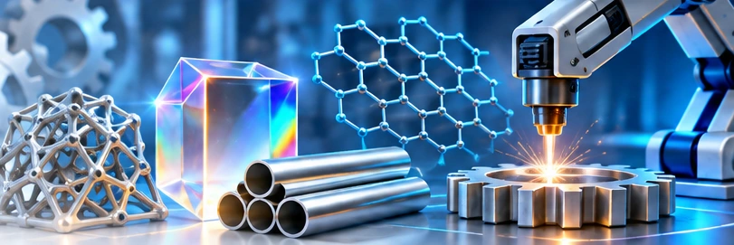

Інтерактивний курс · 9–11 класи
Прикладна механіка та машинобудування
16 тематичних розділів. Досліджуйте інженерні задачі, перевіряйте гіпотези, працюйте з моделями та створюйте власні проєкти.
Переглянути розділи ↓
Розділи курсу
Усі 22 вихідні навчальні модулі збережено й об’єднано у 16 тематичних розділів.
01
Вступ до інженерного дослідження
2 теми
Перейти до розділу →02Інженерна творчість і пошук ідей
1 тема
Перейти до розділу →03Проєктування машин і конструкцій
1 тема
Перейти до розділу →04Механізми та кінематика
1 тема
Перейти до розділу →05Балансування і віброзахист
1 тема
Перейти до розділу →06Деталі машин і передачі
1 тема
Перейти до розділу →07Матеріали та їхні властивості
1 тема
Перейти до розділу →08Новітні матеріали та покриття
1 тема
Перейти до розділу →09Технології обробки матеріалів
1 тема
Перейти до розділу →10Стандарти та допуски
1 тема
Перейти до розділу →11Технічні вимірювання
1 тема
Перейти до розділу →12Креслення і цифрове проєктування
2 теми
Перейти до розділу →13Винахідництво та патентування
2 теми
Перейти до розділу →14Планування наукового експерименту
2 теми
Перейти до розділу →15Аналіз результатів і захист
2 теми
Перейти до розділу →16Наукова комунікація та презентація
2 теми
Перейти до розділу →Наукові можливості КМАН
Досліджуйте, готуйте інженерні проєкти та дізнавайтеся про конкурси й заходи Київської Малої академії наук.
Офіційний сайт КМАН →